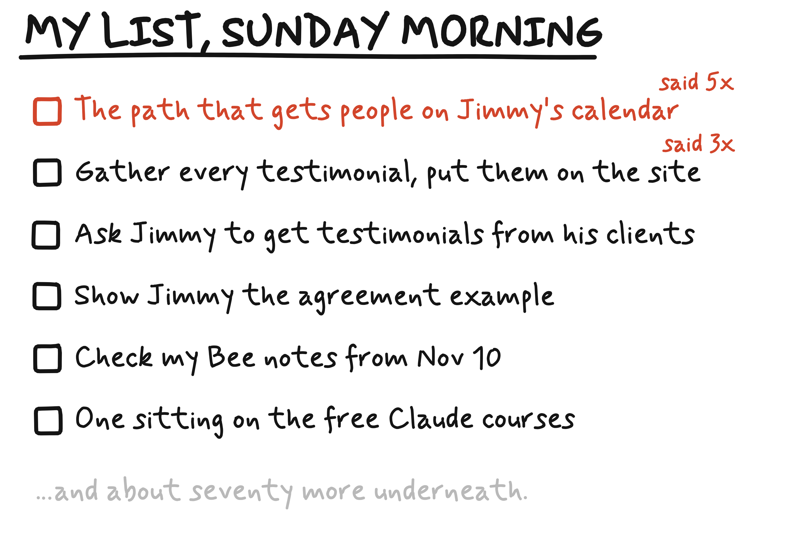
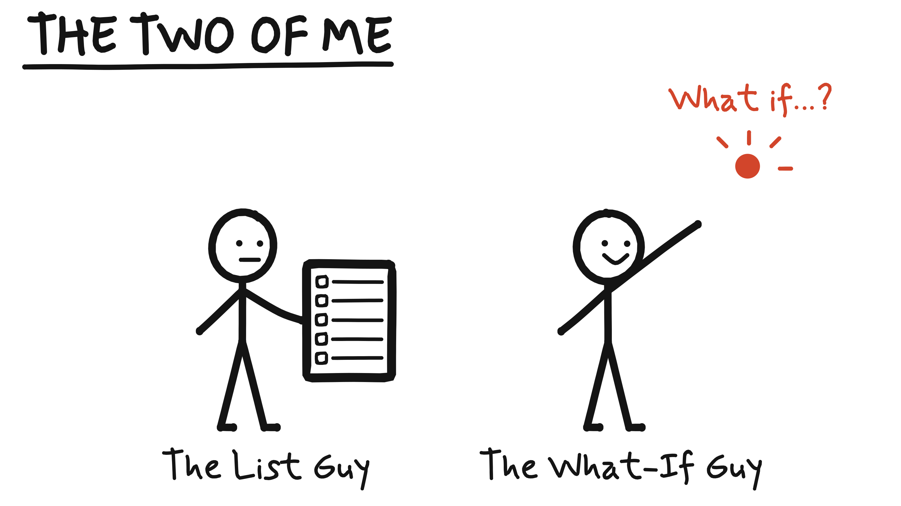
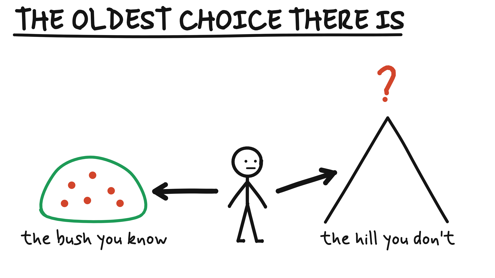
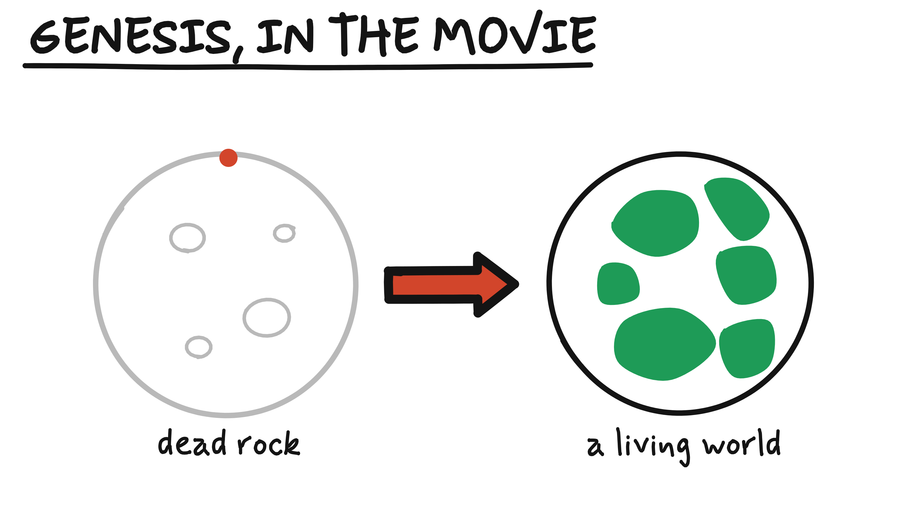
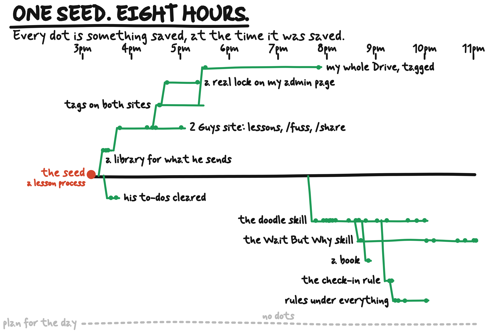
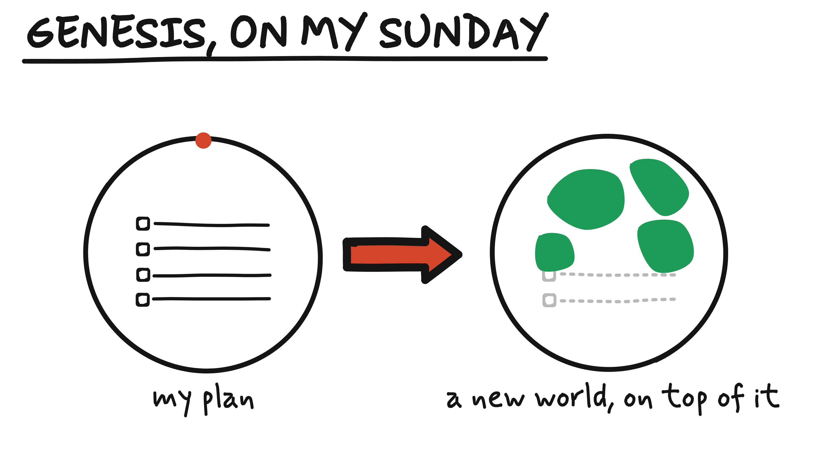
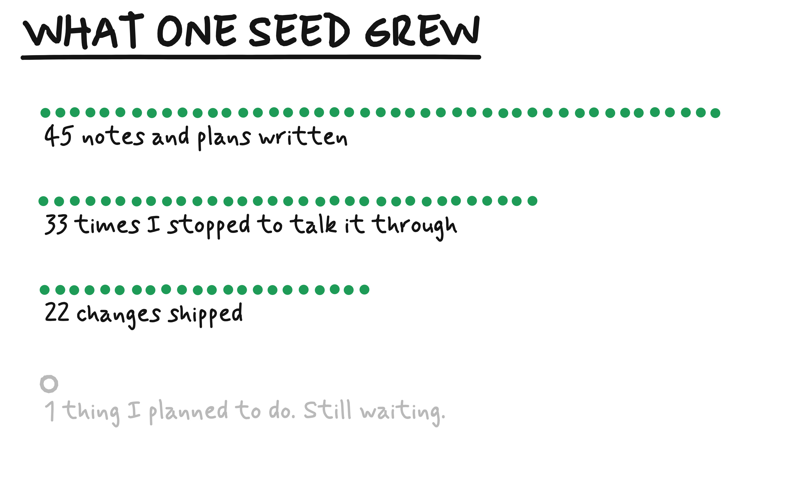

November 15, 2026
The Genesis Seed
What One Good Idea Does When It Lands In Me
A note before you start: this is what came out of Jimmy's Wait But Why explainer. It turned into two skills, a Wait But Why skill and the next evolution of my doodle skill, plus everything that came in between. Enjoy the journey.
Have you ever heard of the Genesis seed?
It's from Star Trek. I'll get to it.
First, a question I've been asking myself for about twenty years.
Where did my day go?
Where The Day Went
This Sunday I woke up with a plan.
One thing sat at the top of my list. I've said it out loud five times now. It's the thing that makes the money.

I dropped Kim off around midday. Came home, got into a few things.
Then I opened what my buddy Jimmy had texted me.
One of them was a gift. His process for turning a big idea into a short lesson people actually get.
I looked up and it was eleven at night.
The thing at the top of my list had not moved an inch.
You know this day.
And you know the story everybody tells about it afterward. I got distracted. I'm scattered. I have no discipline.
I've told that story about myself for years.
This time I had something I've never had before. A record. I do my work with an AI now, and it saves everything as we go. Every note, every change, with the time on it.
So for once I didn't have to guess where the day went.
I could look.
There Are Two Of Me
Before I show you what I saw, you need to meet two people.
The first is The List Guy. He wrote the plan. He knows what makes the money. He's right about almost everything, and he's a little boring.
The second is The What-If Guy.
I know exactly when he was born.
It's 1989, maybe 1990. My dad puts on the original Star Trek. It looks so old it's almost black and white, and I'm thinking, why are you putting this on?
Then it gets me.
What if we did go out there? What if there were new worlds, and somebody had to go find them?
That question never left. Years later my wife, Kim, gave me the box set. All of it. I told her, you're the best.
The What-If Guy doesn't read the list.
He looks up.

He's Older Than Star Trek
Here's what I didn't know until I went looking.
The What-If Guy isn't a flaw in me. He's standard equipment.
Picture an animal standing next to a bush full of berries. It knows this bush. The berries are fine.
Over there is a hill it has never climbed. There could be nothing behind it. There could be a whole valley of berries.
Stay, or go look?
Scientists who study this call it explore versus exploit. Use what you know, or go find out what you don't. Every animal that has to eat faces it, all day long.
And when researchers test it, in people and in monkeys, both lean the same way. Put a brand new option in front of them, and they pick it more often than the odds say they should.
That lean is old. It's in the wiring.
It overshoots sometimes. That's the price of having it.
So when a new idea shows up and something in me says "ooh," that isn't a missing part.
That's the part that goes and looks behind the hill.

Now, Genesis
OK. The seed.
In The Wrath of Khan, the one where Spock dies, there's a device called Genesis.
They show it in a briefing video. A dead, gray moon. Nothing on it but rock.
The device hits the surface, and a wave rolls out.
When the wave passes, there are oceans. Mountains. Green.
One seed. A chain reaction. A whole world.
Hold on to that picture.

A Good Idea Doesn't Get Added. It Grows.
Here is the first thing the record showed me.
I always pictured my day as a list. A new thing comes in, it goes on the list, the list gets one longer.
That is not what happened.
Here is every save from Sunday, at the time I saved it.

Look at it for a second.
The red dot is Jimmy's lesson process. First save, 3:11 in the afternoon.
The List Guy's move is obvious. Answer the texts. Ten minutes. Back to the plan.
At 3:26 The What-If Guy looked up.
What if everything people send me landed in one place? So there's a library. That's the first green branch.
A library belongs on the site I share with Jimmy, so that site gets new pages.
A library needs tags so I can find things. So, tags, on both websites.
All of that sits on my private page, so the private page gets a real lock.
And if the websites have tags, why not my whole Google Drive? Now a little program tags it every four hours, all night.
Then the record goes quiet for two hours. I took a nap. I thought I was out.
At 7:47 I was back in, and the wave starts again, lower on the page. My doodles. Then a whole new skill. A book idea. Two new rules. It doesn't stop until eleven.
Not one of those was on a list. Every one grew out of something before it, and you can trace each branch back to the red dot.
I didn't do eleven things on Sunday.
I did one thing, and it had eleven children.
Now look at the bottom of the picture. The gray dashed line.
That's my plan for the day.
No dots.
The Growing Is How I Find Things
Second thing the record showed me. This is the part I'd defend to anybody.
Around eight, the wave reached my doodles. Jimmy draws his lessons, and that's a look I've been chasing.
So I had my AI draw his process, straight from his own page.
It drew an idea going in one side and a finished lesson coming out the other.
I looked at it and said, wait. How?
It had skipped the middle. The climb. The small yeses you stack up one at a time until the big idea lands on top.
That middle is the whole point of his process. His page says so in words. The picture had lost it, and I'd looked at that picture three times before I saw the hole.

You do not find a missing step from the top of a to-do list.
You find it at hour five, on the fourth redraw, when you're in so deep that a blank spot starts to bother you.
And the hole had a child of its own.
I'd turned down round after round of drawings. Now I could see why. We weren't getting closer. We were just fixing my last note, over and over.
So a rule got written. When a round isn't working, stop. Say what you were doing, where the method broke, and what changes. Then try again.
By ten o'clock that rule was sitting under every project I have.
A few texts from Jimmy turned into a rule for how I work on everything.
The List Guy would never have found that.
He'd have answered the texts in ten minutes and gone back to the list.
What Genesis Does To A Living World
Now the part of the movie people forget.
Genesis doesn't check what's already there.
Fire it at a planet that already has life on it, and it wipes that life out to build its own.
That's why, in the movie, everybody is afraid of it.
And that's the third thing the record showed me.
The seed didn't land on a dead gray moon. It landed on a Sunday that already had a world planned for it.

Here's the count.

Forty-five notes and plans written.
Thirty-three times I stopped to talk something through. All of them after 7:47. That's about once every six minutes.
Twenty-two changes shipped.
And one thing I planned to do. Still waiting.
I got great things done.
Not one of them was what I set out to do.
"Yeah, But"
"Yeah, but that's just distraction with a nicer name."
I wondered that too. So I went and found the person who has actually timed it.
Her name is Gloria Mark. She and her team followed office workers around for three days with a stopwatch.
People stayed on one thing for about three minutes before switching. When they got pulled off a piece of work, it took them more than twenty minutes to get back to it, and they usually touched two other things on the way.
That's distraction. That's what I always assumed I was doing.
Now look at my picture again.
I switched plenty. Library, tags, lock, doodles, rules. I won't pretend I didn't.
But her people were bouncing between things that had nothing to do with each other. Every switch on my page runs back to one red dot.
And here's the part of her research almost nobody repeats. When the interruption was about the thing they were already working on, people told her it helped.
Thirty-three times I stopped to talk it through. Every one was about the thing in front of me.
So scattered is the wrong word. I've been using the wrong word for twenty years.
I was locked in. On one seed. For eight hours.
Here's where she and I agree, though. Her people took twenty minutes to get back to their work.
I never got back at all.
"Yeah, but then just say no to the seed."
To which one?
At 3:11 it was a few texts from a friend. Ten minutes, tops.
A seed doesn't look like a world when it lands. It looks like a seed.
You can't tell at the landing. You can tell at the first branch.
"So it's all good, then?"
No.
The thing at the top of my list is the thing that makes the money. It lost a whole day, and it has lost days like this before.
The world I built Sunday is real. So was the one it grew over.
The Shape Of Me
So here it is. The shape I wanted to see.
One good idea lands.
The What-If Guy looks up.
It doesn't go on the list. It grows, and each thing it grows, grows something else.
Somewhere in the middle of all that, I find something nobody was looking for.
And when the wave passes, there's a new world sitting right where my plan used to be.
That's not a broken version of a normal day.
That's what I do. I just never had a record to show me.
I'm not the guy who can't stick to a list.
I'm a guy who's carrying Genesis around.
One Question, From Now On
You don't hand a thing like that to just anybody. And you don't fire it at whatever happens to float by.
So I'm not going to try to become The List Guy. I've tried. It doesn't hold, and I'd lose the missing steps.
I'm going to ask one question. Not when the seed lands. I can't see it then.
At the first branch.
On Sunday that was 3:26. The moment "answer his texts" turned into "build a library." That's the wave starting. That one I can feel.
Right there, I ask.
Is this worth a world?
Because that's what it costs. Not ten minutes. A world. Usually the one I had planned.
Some seeds are worth it. Jimmy handed me a good one. I'll be using what grew out of it every day.
And here's the thought I can't put down.
When I'm in something, I go all the way, until it's right. Then the next thing.
The thing at the top of my list has never had that from me. Not once.
It's a seed too. I've just been treating it like a chore.
What happens when I plant it?
Sources for the numbers: Gloria Mark (UC Irvine) on interrupted work, in her Gallup interview "Too Many Interruptions at Work?"; the novelty lean in people and monkeys, Costa and colleagues, 2019.